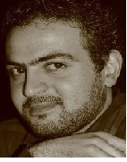
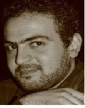
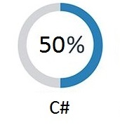
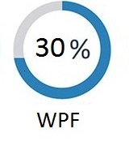
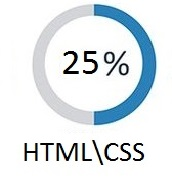
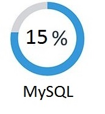

Tigran Kalantaryan
ASP.Net Developer
ABOUT ME
Date of birth: 18 May 1989
Address: Yerevan Armenia
Email: tigrankalantaryan@gmail.com
Phone: Mobile (+374 94) 35 11 40
 

stex piti lini erkar texr shaaaat erkar tex chtgitem inch baic text, im masin, te es inchqan lavn em, inchqan bari em, inchqan xelaci em, u vrodi es verjn em :D de senc uxaki texta lracnum em :)
SKILLS




EDUCATION

- SEUA 2006-2010
State Engineering University of Armenia
The Bachelor’s Degree in Engineering
- MIC Armenia 2014-2015
Training Course at Microsoft Innovation Centre in Armenia C# Advanced Level and Windows Presentation Foundation(WPF)
SKILLS/ADDITIONAL
- Languages Known: Armenian (Native), Russian (Fluent), English (intermediate)
- Familiarity with basic concepts of C#
- Ability to quickly learn and utilize new methods, system and technology
- Ability to work in a team, interpersonal skills